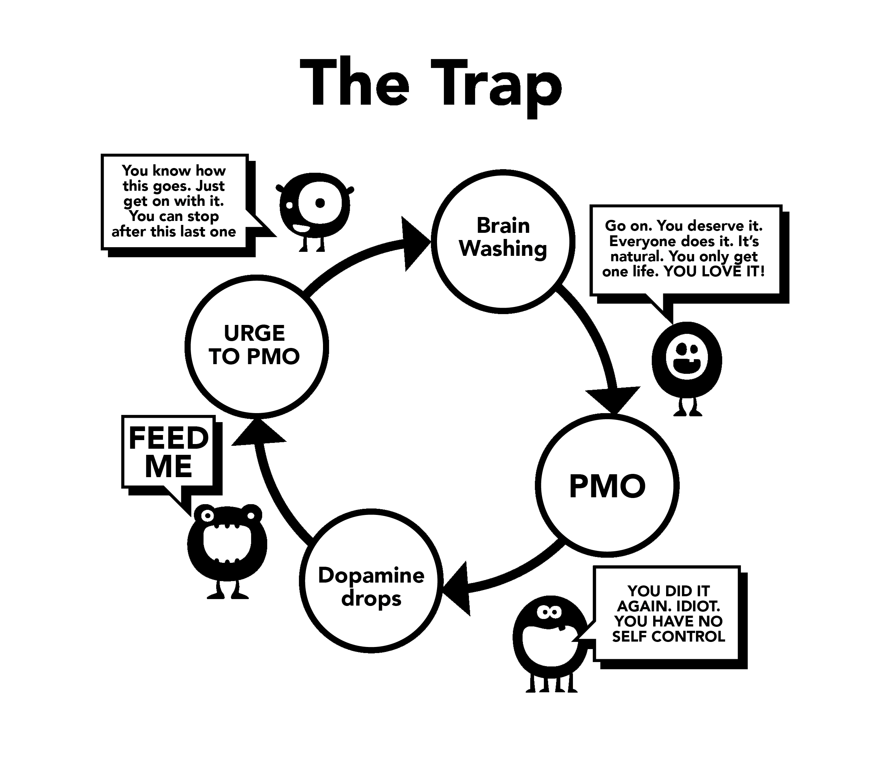

Chương 5: Sự tẩy não
Đây là lý do thứ hai khiến chúng ta bắt đầu tiêu thụ porn. Để hiểu rõ về sự tẩy não này, chúng ta cần phải xem xét một cách kĩ lưỡng về hiệu ứng mạnh mẽ của các kích thích siêu chuẩn (supernormal stimulus). Não bộ của chúng ta vẫn chưa được tiến hóa đủ để có thể chống lại hậu cung trực tuyến (online harem), cho phép chúng ta lướt qua nhiều bạn tình tiềm năng trong 15 phút so với tổ tiên của chúng ta trong nhiều đời.
Đã có nhiều lời khuyên sai lầm trong quá khứ, một ví dụ có thể kể đến là việc thủ dâm dẫn đến mù lòa. Điều này, cùng với các chiến thuật gây sợ hãi khác, rõ ràng đã đi quá đà. Những quan niệm sai lầm như vậy đã được khoa học bác bỏ. Nhưng cùng với đó, chúng ta đã vứt bỏ cả những điều đúng đắn; từ những năm đầu đời, tiềm thức non nớt của chúng ta bị tấn công bởi những thông điệp, hình ảnh, tạp chí và quảng cáo gợi dục, dù trực tiếp hay gián tiếp. Một số video âm nhạc cũng rất gợi cảm, nhưng đừng tuyệt vọng, hãy biến nó thành một trò chơi để xác định những yếu tố chúng đang sử dụng là gì - liệu đó là giá trị gây sốc (shock value), tính mới lạ, màu sắc, kích thước, taboo (điều cấm kị), cảm giác hoài niệm, v.v. Trò chơi này thậm chí có thể được dạy cho trẻ vị thành niên như một cách giáo dục chúng.
Bản chất của thông điệp là “Thứ quý giá nhất trên trái đất này, suy nghĩ và hành động cuối cùng của tôi, sẽ là đạt cực khoái.” Liệu đây có phải là phóng đại? Hãy xem bất kỳ cốt truyện phim ảnh nào và bạn sẽ thấy sự kết hợp giữa các giác quan (cái chạm, mùi hương, giọng nói) và khía cạnh sinh sản (cực khoái) của tình dục. Tác động này không được ghi nhận trong nhận thức của chúng ta, nhưng tiềm thức có thời gian để hấp thụ nó.
Lý giải khoa học
Có những lời rao hàng ngược lại: lo sợ rối loạn chức năng tình dục, mất động lực, thích gái ảo hơn gái thật, YourBrainOnPorn.com và các cộng đồng trực tuyến khác nhau, nhưng những phong trào này không thực sự giúp mọi người ngừng tiêu thụ porn lại. Về mặt logic thì nên là vậy nhưng thực tế thì ngược lại. Ngay cả những rủi ro sức khỏe được liệt kê từ các bình duyệt khoa học (peer-reviewed studies) trên YourBrainOnPorn.com cũng không đủ mạnh để có thể ngăn một thiếu niên bắt đầu xem porn.
Trớ trêu thay, nguồn lực mạnh mẽ nhất trong cơn hỗn độn này lại chính là từ bản thân người nghiện. Thật sai lầm khi cho rằng người nghiện yếu đuối và có ý chí kém cỏi. Bạn cần phải mạnh mẽ về thể chất để đối phó với chứng nghiện sau khi biết nó tồn tại. Có lẽ khía cạnh đau đớn nhất là họ tự coi mình là những người thất bại, kẻ thua cuộc và những người hướng nội khó chịu. Khả năng cao là một người bạn sẽ thú vị hơn nếu họ không tự hạ thấp mình vì muốn tự tìm khoái lạc.

Vấn đề sử dụng sức mạnh ý chí
Người nghiện cai nghiện bằng cách sử dụng phương pháp ý chí sẽ đổ lỗi cho sự thiếu ý chí của bản thân và tự hủy hoại sự bình an và hạnh phúc của chính họ. Đó là thất bại trong kỷ luật bản thân và một điều khác là sự chán ghét bản thân. Rốt cuộc, không có luật nào yêu cầu bạn phải luôn cương cứng trước khi quan hệ tình dục, phải cảm thấy nứng và thỏa mãn được đối tác. Chúng ta đang bàn về cơn nghiện - không phải là một thói quen và bạn sẽ chẳng bao giờ bào chữa để bỏ một thói quen như chơi golf. Nhưng tại sao bạn lại bào chữa cho cơn nghiện Porn?
Tiếp xúc liên tục với những kích thích siêu chuẩn sẽ thiết lập lại bộ não của bạn, vì vậy, việc xây dựng khả năng chống lại sự tẩy não này là rất quan trọng, như thể bạn mua một chiếc ô tô từ một đại lý ô tô cũ - gật đầu một cách lịch sự nhưng trong lòng lại không tin vào lời người bán hàng đang nói. Vì vậy, đừng tin rằng bạn phải mang lại những cuộc làm tình tốt nhất và nhiều nhất có thể,
Đừng chơi trò safe porn nữa; con quỷ nhỏ đã nghĩ ra trò chơi đó để lừa bạn thôi. porn có được chứng nhận bởi một số cơ quan có thẩm quyền không? Các trang web porn thu thập dữ liệu từ người nghiện và sử dụng dữ liệu đó để phục vụ cho nhu cầu của họ, nếu họ thấy mức tăng ở một danh mục nhất định, họ sẽ tập trung vào đó và đưa nội dung ra càng sớm càng tốt. Đừng để bị lừa bởi các lý do như nội dung giáo dục hay phim sex cho nữ giới. Hãy tự hỏi bản thân: "Tại sao mình lại làm vậy? Mình có thực sự cần phải làm vậy không?"
Không, tất nhiên là không rồi.
Hầu hết người nghiện thề rằng họ chỉ xem porn tĩnh (static porn) và porn hạng nhẹ (soft porn) nên không vấn đề gì. Trong khi trên thực tế, họ đang gồng mình và chiến đấu bằng ý chí của bản thân để chống lại những cám dỗ. Nếu thực hiện quá thường xuyên và quá lâu sẽ khiến ý chí của họ bị kiệt quệ, dẫn đến những thất bại trong các khía cạnh khác của cuộc sống nơi mà ý chí đóng một vai trò quan trọng như tập thể dục, ăn kiêng, v.v. Những thất bại đó khiến họ cảm thấy đau khổ và tội lỗi, và rồi họ lại quay về với việc xem sex và thủ dâm. Nếu không làm vậy thì họ cũng sẽ trút cơn giận đó lên những người thân yêu.
Sự tẩy não sẽ càng trở nên trầm trọng hơn khi bạn càng ngày càng nghiện Porn. Tiềm thức của bạn biêt rằng con quỷ nhỏ cần được nuôi lớn (?). Đó là nỗi sợ hãi khiến mọi người không thoát ra được, sợ cái cảm giác trống rỗng, bất an mà việc ngăn chặn cơn lũ Dopamine gây ra. Việc bạn không nhận thức được về nó không có nghĩa là nó không tồn tại. (You don't have to understand it any more than a cat needs to understand where the hot water pipes are: the cat just knows that if it sits in a certain spot it feels warm. - Đang tìm một câu so sánh Tiếng Việt hay)
Sự thụ động
Sự thụ động của tâm trí ta và sự lệ thuộc vào bên nắm quyền dẫn đến bị tẩy não là khó khăn chính trong việc dừng việc xem porn lại.
Sự lớn lên của chúng ta trong xã hội, được củng cố bằng cách tẩy não chứng nghiện của chính chúng ta và kết hợp với những người quanh ta - bạn bè, người thân và đồng nghiệp của chúng ta.
Cụm từ 'từ bỏ' là một ví dụ điển hình về sự tẩy não, như thể ta phải hi sinh thực sự. Sự thật đẹp đẽ là bạn không hề phải từ bỏ thứ gì cả; ngược lại, bạn sẽ tự giải thoát mình khỏi căn bệnh quái ác và đạt được những thành tựu nhiệm mầu. Chúng ta sẽ bắt đầu loại bỏ sự tẩy não này ngay bây giờ, sẽ không còn là 'từ bỏ' nữa, mà là dừng xem porn lại, hay đúng hơn là, thoát khỏi cơn nghiện quái ác đấy.
Thứ duy nhất khiến ta bắt đầu xem Porn là do những người khác cũng xem, điều này khiến ta cảm thấy như bản thân đang bỏ lỡ điều gì. Ta cố để nghiện nhưng để rồi chẳng thấy được bản thân đã bỏ lỡ điều gì. Mỗi khi xem thêm một clip, ta lại được trấn an rằng phải có cái gì trong đó, nếu không mọi người sẽ không làm vậy và mảng kinh doạnh về Porn sẽ không lớn đến vậy. Kể cả khi đã cai nghiện, người cai được một thời gian cảm thấy họ bị tước đoạt khi cuộc thảo luận về một nghệ sĩ giải trí gợi cảm, ca sĩ hoặc thậm chí là một ngôi sao khiêu dâm xuất hiện trong các bữa tiệc hoặc các hoạt động xã hội.
Và rồi họ cảm thấy an toàn, họ tự nhủ sẽ xem một lần tối nay và trước khi họ biết điều đó, thì họ đã bị mắc kẹt vào cái bẫy khiêu dâm một lần nữa rồi.
Để rồi cảm giác an toàn đấy khiến họ tự trấn an bản thân rằng chỉ xem một chút thôi. Trước khi họ nhận thức được chuyện gì đã xảy ra thì họ đã bị mắc kẹt vào cái bẫy Porn một lần nữa rồi.
Sự tẩy não là quá lớn và bạn cần phải nhận thức được tác hại của nó. Công nghệ càng phát triển và số lượng trang phim đen và tốc độ sẽ càng được tăng theo cấp số nhân. Ngành công nghiệp porn đang đầu tư hàng triệu đô vào công nghệ thực tế ảo để nó trở thành thứ tốt nhất tiếp theo. Chúng ta không biết mình đang đi đâu, chưa được chuẩn bị đầy đủ để đối phó với những gì đã, đang và sẽ xảy ra.
Chúng ta sẽ loại bỏ sự tẩy não này, mãi mãi khỏi những con nghiện phim sex đã bị tước đi:
- Sức khỏe
- Năng lượng
- Sự đủ đầy
- Sự bình yên trong tâm trí
- Sự tự tin
- Lòng can đảm
- Lòng tự trọng
- Hạnh phúc
- Tự do
Người nghiện thu được gì từ những hy sinh lớn lao này? CHẢNG GÌ CẢ, ngoài cái ảo tưởng cố gắng tìm lại cảm giác bình yên và tự tin mà người không nghiện luôn tận hưởng.
Cơn đau cai nghiện
Như đã giải thích trước đó, người nghiện tin rằng họ tiêu thụ porn để thưởng thức, thư giãn hoặc để giáo dục giới tính. Lý do thực tế là để giảm bớt căng thẳng khi cơn thiếu thốn ập đến. Tiềm thức của chúng ta tin rằng porn và thủ dâm tại một số thời điểm nhất định có xu hướng mang lại khoái cảm. Khi chúng ta ngày càng bị cuốn vào nó, nhu cầu giải tỏa cơn thèm ngày càng lớn và cái bẫy tinh vi ấy lại càng kéo bạn xuống. Quá trình này diễn ra chậm đến mức bạn đã không nhận ra nó, hầu hết những người trẻ không nhận ra họ bị nghiện cho đến khi cố gắng dừng xem porn lại và thậm chí, nhiều người sẽ không thừa nhận rằng họ đã bị nghiện.
Hãy xem qua cuộc trò chuyện giữa một chuyên gia trị liệu với hàng trăm thiếu niên:
Chuyên gia trị liệu: "Cháu biết là rằng internet porn là một loại ma túy và lý do duy nhất khiến cháu tiêu thụ porn là vì cháu không thể dừng xem porn lại đúng không?"
Bệnh nhân: "Không hề. Cháu thích porn, nếu không thích thì cháu đã không xem."
Chuyên gia trị liệu: "Hãy thử không xem một tuần để chứng minh là cháu có thể làm được nếu cháu muốn được không?"
Bệnh nhân: "Không cần đâu bác. Cháu thực sự thích Porn. Nếu cháu muốn dừng xem porn lại, cháu sẽ dừng."
Chuyên gia trị liệu: "Chỉ cần dừng xem porn lại một tuần để chứng minh với bác là cháu không nghiện Porn là được."
Bệnh nhân: "Tại sao lại phải làm vậy? Cháu thực sự thích Porn mà"
Như đã nêu, người nghiện có xu hướng giải tỏa cơn thèm của họ vào những thời điểm căng thẳng, buồn chán, tập trung hoặc sự kết hợp của những điều này. Trong các chương tiếp theo, chúng ta sẽ bàn về các khía cạnh này của sự tẩy não này.